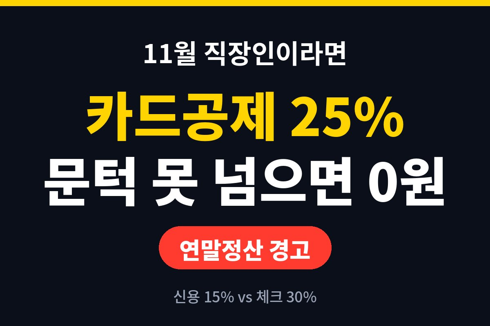

연말정산 카드공제는 카드 사용액이 총급여의 25%를 넘기 전까지는 공제를 한 푼도 못 받고, 넘긴 금액부터 신용카드는 15%, 체크카드는 30%가 공제 대상이 됩니다. 11월에 카드 쓸 일이 많은 직장인이라면, 내 카드 사용액이 지금 그 문턱을 넘었는지 계산해 보셨나요?
많은 분이 "카드 많이 쓰면 무조건 환급받는다"고 생각하시는데, 이게 제일 흔한 오해예요. 연말정산 카드공제는 총급여의 25%까지는 아예 공제를 안 해주는 구조거든요. 쓴 돈 전부가 아니라 문턱을 넘은 부분만 공제 대상이 됩니다.
예를 들어 총급여가 4,000만원이라면 그 25%인 1,000만원까지는 공제가 0원이에요. 이건 이해를 돕기 위한 가정이고, 내 총급여는 급여명세서나 원천징수영수증에서 확인하시면 됩니다. 그러니 올해 카드를 1,000만원밖에 안 썼다면 공제 금액은 사실상 없는 셈이죠. 아무리 열심히 긁어도 문턱 아래에서는 세금이 안 줄어듭니다.
문턱을 넘은 뒤에는 결제 수단에 따라 공제율이 달라져요. 흔히 알려진 기준으로 신용카드는 15%, 체크카드와 현금영수증은 30%입니다. 같은 100만원을 써도 체크카드로 쓰면 공제 대상 금액이 두 배가 되는 거예요.
다만 여기서 주의할 점이 있어요. 공제받는 건 쓴 돈의 일부를 소득에서 빼주는 것이지, 그 금액을 그대로 돌려받는 게 아닙니다. 소득이 줄어든 만큼 세금이 줄어드는 구조라서, 실제 환급액은 내 세율에 따라 달라지죠. 그리고 공제에는 한도가 있어서 무한정 받을 수는 없어요. 대중교통, 전통시장, 도서·공연 같은 항목은 공제율이 따로 있을 수 있으니 해당 연도 기준은 국세청 안내에서 꼭 확인하세요.
| 구분 | 문턱 전 | 문턱 후 |
| 신용카드 | 공제 없음 | 15% |
| 체크카드·현금영수증 | 공제 없음 | 30% |
첫 번째는 지금까지 쓴 금액 확인이에요. 카드사 앱이나 홈택스 연말정산 간소화 서비스의 중간 조회로 올해 사용액을 대략 볼 수 있습니다. 이 금액이 총급여의 25%에 못 미쳤다면, 연말까지 쓸 소비는 문턱을 넘기는 데 먼저 쓰입니다. 이 구간에서는 신용카드든 체크카드든 공제 차이가 없어요. 그러니 혜택 좋은 신용카드로 쓰는 게 오히려 이득일 수 있죠.
두 번째는 문턱을 이미 넘겼다면 이야기가 달라진다는 거예요. 이때부터는 같은 소비라도 체크카드나 현금영수증으로 쓰는 쪽이 공제 면에서 유리합니다. 그래서 "연초엔 신용카드, 문턱 넘은 뒤엔 체크카드"라는 말이 나오는 거고요.
세 번째는 반대 함정이에요. 공제 받겠다고 필요 없는 소비를 늘리면 그게 제일 큰 손해입니다. 공제율이 30%여도 나머지 70%는 내 돈이 나가니까요. 쓸 계획이던 소비의 결제 수단만 바꾸는 정도가 딱 좋습니다.
카드공제는 연말정산의 일부일 뿐이에요. 의료비, 교육비, 연금저축 같은 다른 공제와 합쳐서 봐야 내 환급액이 보입니다. 특히 연말에 가까워질수록 바꿀 수 있는 게 줄어들기 때문에, 11월은 점검하기 딱 좋은 시기죠. 12월이 되면 결제 수단을 바꿀 시간이 얼마 안 남아요.
오늘 한 가지만 해보세요. 카드 앱을 열어 올해 사용액을 보고, 내 총급여의 25%와 비교해 보는 겁니다. 이 숫자 하나만 알아도 남은 두 달의 카드 쓰는 방식이 달라져요. 혹시 올해 이미 문턱을 넘긴 분 계신가요? 댓글로 알려주세요. 도움이 되셨다면 구독해 주시면 다음 글도 바로 받아보실 수 있어요.
※ 본 글은 일반적인 정보 제공이며 투자·세무 권유가 아닙니다. 세부 공제 기준은 연도별로 달라질 수 있으니 국세청 안내를 확인하세요.